배관기능장 (2004-04-04 기출문제)
1과목: 임의구분
1. 배수 거리가 짧은 아파트 등에 별도의 통기관이 필요없이 배수를 회전시켜 공기 코어를 형성시켜서 배수와 통기를 실시하며 신정 통기관이 필요한 배수 통기방식으로 디플 렉터와 브레이크실이 있는 배수 통기방식은?
- 소벤트 방식(Sovent System)
- 섹스티아 방식(Sextia System)
- 구보타 방식(Kubota System)
- 코지마 방식(Kogima System)
(정답률: 94%)

2. 간접 가열식 중앙 급탕법에 대한 설명 중 잘못된 것은?
- 가열용 코일이 필요하다.
- 고압 보일러가 필요하다.
- 대규모 급탕 설비에 적당하다.
- 저탕조 내부에 스케일이 잘 생기지 않는다.
(정답률: 73%)
3. 표준 대기압에서 일반적인 원심펌프의 실용적인 흡입양정으로 가장 적합한 것은?
- 7 m
- 10 m
- 11 m
- 15 m
(정답률: 69%)
4. 급수펌프 시공시 25mm 흡입관을 설치하려 한다. 흡입구는 흡수면에서 다음 중 몇 mm 이상 물 속에 넣어 공기흡입을 방지해야 하는가?
- 5
- 15
- 25
- 50
(정답률: 73%)
5. 드렌처 헤드의 설치시 방호할 면의 길이에 대한 외벽용 간격의 수직거리로 다음 중 가장 적합한 것은?
- 15 m
- 10 m
- 7 m
- 4 m 이하
(정답률: 69%)
6. 저압 증기 난방에서 환수관이 고장난 경우 보일러의 물이 유출되는 것을 방지하기 위한 배관 연결법인 것은?
- 리프트 피팅 연결법
- 하드포드 연결법
- 역환수식 배관법
- 직접 리턴 방식
(정답률: 66%)
7. 온수 난방의 장점 설명 중 잘못된 것은?
- 유량을 제어하여 방열량을 조절할 수 있다.
- 온수 보일러는 증기 보일러보다 취급이 용이하다.
- 증기 트랩을 사용하지 않아서 고장이 적다.
- 예열 시간이 짧아서 단시간에 사용하기 편리하다.
(정답률: 95%)
8. 안전상 유류배관 설비의 기밀시험을 할 때 사용해서는 안되는 가스은?
- 질소
- 산소
- 탄산가스
- 암모니아
(정답률: 93%)
9. 자동화 시스템에서 제어 테이터의 처리하는 요소로, 제어정보를 분석 처리하여 필요한 제어 명령을 내려주는 장치인 자동화의 5 대 요소 중 하나인 것은?
- 센서(sensor)
- 네트워크(network)
- 프로세서(processor)
- 소프트 웨어(software)
(정답률: 63%)
10. 설비자동화 유압시스템 결함 중 압력이 저하하는 원인이 아닌 것은?
- 펌프의 흡입이 불량하다.
- 구동동력이 부족하다.
- 내부, 외부 누설이 증가하다.
- 탱크 내의 유면이 너무 높다.
(정답률: 91%)
11. 옥상 탱크식 급수법의 양수관이 25A일때 옥상탱크의 오버 플로관(over flow pipe)의 구경으로 가장 적당한 것은?
- 25A
- 50A
- 75A
- 100A
(정답률: 77%)
12. 다음 중 통기관을 설치하는 가장 중요한 이유인 것은?
- 실내의 환기를 위하여
- 배수량의 조절을 위하여
- 유독가스를 제거하기 위하여
- 트랩 내 봉수를 보호하기 위하여
(정답률: 92%)
13. 가스배관시 하천, 수로를 횡단하는 매설배관의 경우 독성가스 누출의 방지를 위해 이중관으로 시공해야할 가스 만으로 짝지은 것이 아닌 것은?
- 암모니아, 염소
- 포스겐, 산화에틸렌
- 질소, 수소
- 시안화수소, 황화수소
(정답률: 82%)
14. 열 팽창에 의한 배관의 이동을 구속 또는 제한하는 역할을 하는 리스트레인트의 종류 중 배관의 일정방향의 이동과 회전만 구속하는 것으로 신축 이음쇠와 대압에 의해서 발생하는 축방향의 힘을 받는 곳에 사용하는 것은?
- 스토퍼
- 앵커
- 스커트
- 러그
(정답률: 84%)
15. 기계의 진동 및 수격작용 등에 의한 진동을 완화시키기 위하여 다음 중 가장 적합한 것은?
- 브레이스(Brace)
- 앵커(Anchor)
- 써포트(Support)
- 콘스탄트 행거(constant Hanger)
(정답률: 92%)
16. 전개시에 저항이 거의 없고, 고압에 견디는 구조이므로 간선관로(幹線管路)의 차단용으로 유체의 흐름을 단속하는 대표적인 밸브로서 가장 많이 사용하는 것은?
- 다이어프램 밸브(diaphragm valve)
- 글로우브 밸브(globe valve)
- 슬루스 밸브(sluice valve)
- 플랩 밸브(flap valve)
(정답률: 67%)
17. 탄력있는 두루마리 형태의 매트(mat)로 만든 제품도 있으며 보온 단열 효과도 우수하며, 복원력이 뛰어나 운반 및 보관이 용이하게 포장되어 있어 건물의 보온 단열재와 산업용 흡음재로도 사용이 가능한 보온재는?
- 규산칼슘
- 폴리우레탄 폼
- 그라스 울
- 탄산 마그네슘
(정답률: 85%)
18. 동관 이음쇠의 한쪽은 안쪽으로 동관을 삽입접합되고, 다른 쪽은 암나사를 내어 강관에는 숫나사를 내어 나사이음하게 되는 경우에 필요한 동합금 이음쇠는?
- C × F 아답터
- Ftg × F 아답터
- C × M 아답터
- Ftg × M 아답터
(정답률: 81%)
19. 인장강도 50 kgf/mm2이고, 사용압력이 60kgf/cm2이라면 스케줄번호로 가장 적합한 것은? (단, 허용응력은 인장강도에 대하여 안전율이 5 이다)
- 30
- 40
- 60
- 80
(정답률: 60%)
20. 동관의 두께별 분류 중 두께가 가장 두꺼운 것은?
- P형
- L형
- M형
- K형
(정답률: 91%)
2과목: 임의구분
21. 낮은 곳에 있는 응축수를 높은 곳에 올리거나 환수관에 응축수를 저장하는 일이 없이 중력으로 저압 보일러에 환수할 때 리턴 트랩으로 사용하는 것은?
- 버킷형 트랩(bucket type trap)
- 부자형 트랩(float type trap)
- 리프트 트랩(lift type trap)
- 임펄스형 트랩(impulse type trap)
(정답률: 68%)
22. 프리스트레스(pre-stress) 콘크리트관의 특징 설명으로 가장 적합한 것은?
- 강선을 인장해서 붙인 뒤 원주방향으로 압축응력을 부여한 관이다.
- 강재형틀에 원심력을 주어 콘크리트를 투입하여 콘크리트를 균일하게 다져준 관이다.
- 철근을 보강한 콘크리트관으로 진동기나 다짐기계를 사용한다.
- 석면과 시멘트를 1:5∼1:6 비율로 배합하여 만든 관이다.
(정답률: 61%)
23. 다음 중 경질 염화비닐관이 강관보다 우수한 점은?
- 열팽창율이 적다.
- 충격강도가 크다.
- 관내 마찰손실이 적다.
- 저온 및 고온에서의 강도가 크다.
(정답률: 84%)
24. 배관을 유입구를 포함하여 네 방향으로 분기하는 부속 재료명은?
- 크로스
- 벤드
- 플러그
- 니플
(정답률: 91%)
25. 연단에 아마인유를 배합하여 사용하는 페인트는?
- 광명단 도료
- 산화철 도료
- 알미늄 도료
- 합성수지 도료
(정답률: 89%)
26. 다음 중 공조 설비와 관련된 습공기 이론에서 건구온도, 습구온도,노점온도가 동일한 경우는?
- 절대 습도 100 %
- 상대 습도 100 %
- 절대 습도 50 %
- 상대 습도 50 %
(정답률: 86%)
27. 비중 1.2 의 유체를 4m3/min 유량으로 높이 12 m 까지 올리려면 펌프의 동력은 약 몇 kW 가 필요한가?
- 9.41
- 10.14
- 11.2
- 15.01
(정답률: 47%)
28. 안지름 100 mm 인 관속을 매초 2.5 m 의 속도로 물이 흐르고 있을 때 단위 시간당 흐르는 물의 유량은 약 몇 m3/hr 인가?
- 70.69
- 78.54
- 706.9
- 785.4
(정답률: 42%)
29. 다음 중 파이프 바이스의 크기를 나타내는 것은?
- 최대로 물릴 수 있는 관의 지름치수
- 조오의 폭
- 조오의 길이
- 바이스의 전장
(정답률: 83%)
30. 스텐레스 강관 MR 조인트에 관한 설명으로 올바른 것은?
- 프레스 공구가 필요하나, 관의 강도는 100% 활용할 수 있다.
- 스패너 이외의 특수한 접속 공구가 필요하다.
- 청동제 이음쇠를 사용하여도 다른 강관과는 자연 전위차가 있어 부식의 문제가 있다.
- 청동제 이음쇠를 사용하므로 관내 수온 변화에 의한 이완이 없다.
(정답률: 59%)
31. 주철관의 소켓 접합시 급수관에서 안의 삽입 길이를 소켓 깊이의 얼마만큼 삽입하여야 하는가?
- 소켓의 1/2
- 소켓의 1/3
- 소켓의 2/3
- 소켓의 3/4
(정답률: 70%)
32. 가스용접 시작 전에 점검해야 할 사항 중 안전 관리상 가장 중요한 사항은?
- 아세틸렌 가스 순도를 점검한다.
- 안전기의 수위를 점검한다.
- 재료와 비교하여 토치를 점검한다.
- 산소 용기의 잔류 압력을 점검한다.
(정답률: 85%)
33. 다음 중 T자 모양으로 연결하기 위하여 직관에서 구멍을 내고 관을 분기할 때 사용하는 동관용 주공구는?
- 싸이징 투울(sizing tool)
- 플레어링 툴 (flaring tool)
- 익스팬더(expander)
- 익스트랙터(extractor)
(정답률: 81%)
34. 일반적으로 호칭지름 50mm 이하의 폴리에틸렌 관의 이음 방법으로 관지름이나 관 두께가 커질수록 클립의 체결력이 약하며 접합강도가 불충분한 이음인 것은?
- 인서트 이음
- 열간이음
- 플랜지 이음
- 테이퍼 코어이음
(정답률: 75%)
35. 1 시간에 100 ℃의 물 15.65 ㎏을 전부 증기로 만들려면 약 몇 kcal/h 필요한가?
- 3320
- 6683
- 8435
- 8515
(정답률: 59%)
36. 콘크리트관의 콤포 이음시 시멘트와 모래의 배합인 콤포의 배합비와 수분의 양으로 가장 적합한 것은?
- 1 : 2 이고 수분의 양은 약 17%
- 1 : 1 이고 수분의 양은 약 17%
- 1 : 2 이고 수분의 양은 약 50%
- 1 : 1 이고 수분의 양은 약 50%
(정답률: 91%)
37. 고무링을 압륜으로 죄어 볼트로 체결한 것으로 굽힘성이 풍부하여 다소의 굴곡에도 누수가 없고, 작업이 간편하여 수중에서도 용이하게 접합할 수 있는 주철관의 접합법인 것은?
- 소켓 접합
- 기계적 접합
- 빅토릭 접합
- 플랜지 접합
(정답률: 78%)
38. 도관의 접합방법에 관한 설명 중 틀린 것은?
- 도관 접합에는 마(yarn)를 삽입하고 몰탈을 바르는 방법과 몰탈 만 바르는 접합법이 있다.
- 접합할 때 허브(hub)쪽을 상류로 향하게 하여 관이 이동되지 않도록한다.
- 허브와 소켓을 일직선으로 맞춘 다음 수평기로 구배를 맞추고 몰탈 접합한다.
- 도관은 매설 배관이므로 접합부 윗부분에 만 몰탈을 채우면 몰탈이 턱속으로 흘러 아래까지 들어간다.
(정답률: 75%)
39. 용접에서 피복제의 중요한 작용이 아닌 것은?
- 용착 금속을 보호한다
- 아크를 안정하게 한다
- 스패터링을 적게 한다
- 용착 금속을 급냉시킨다
(정답률: 93%)
40. 정격 2차전류가 200A, 실제 사용전류가 150A 일 때, 정격 사용률 40%인 용접기의 실제 허용 사용률은 몇 % 인가?
- 71
- 65
- 58
- 54
(정답률: 57%)
3과목: 임의구분
41. 다음 용접법 중 아크 용접으로 분류되는 것은?
- TIG 용접 및 MIG 용접
- 엘렉트로 슬래그 용접
- 프로젝션 용접
- 초음파 용접
(정답률: 85%)
42. 방사선 투과시험(RT)의 장점 중 틀린 것은?
- 두께의 크기에 관계없이 검사할 수 있다.
- 자성의 유무에 관계없이 검사할 수 있다.
- 표면상태의 양부에 관계없이 검사할 수 있다.
- 미소균열(micro crack)에 관계없이 검사할 수 있다.
(정답률: 71%)
43. 용접이음부에 발생하는 용접결함 중 모서리 이음, T 이음등에서 볼 수 있는 것으로 강의 내부에 모재의 표면과 평행하게 층상으로 발생되는 것은?
- 크레이터 균열(Crater crack)
- 라미네이션 균열(Lamination crack)
- 심과 랩(Seam and lap)
- 라멜라테어 균열(Lamellar tear crack)
(정답률: 57%)
44. 피복 아크 용접에서 직류 정극성(DCSP)에 관한 특성으로 틀린 것은?
- 모재의 용입이 깊다.
- 봉의 용융이 늦다.
- 비드 폭이 넓다.
- 일반적으로 중판 이상에 많이 쓰인다.
(정답률: 70%)
45. 기준선(그 지방 해수면)으로 부터 설치 파이프 바깥 지름의 밑부분까지 높이가 3.5 m 일 때 나타내는 기호로 적합한 것은?
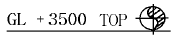
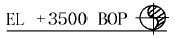
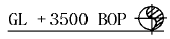
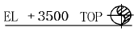
(정답률: 82%)
46. 파이프 표면에 파랑색이 칠해져 있는 경우 파이프 내의 유체는?
- 물
- 증기
- 공기
- 가스
(정답률: 91%)
47. 라인 인덱스(line index)에서 보냉, 보온, 화상방지 등을 필요로 할 때의 사용기호 중 보냉을 표시하는 기호는?
- CPP
- INS
- PP
- CINS
(정답률: 72%)
48. KS 배관 도시 기호 중 유체의 역류 방지용 첵크 밸브에 대한 기호로 맞는 것은?
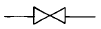
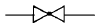
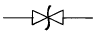
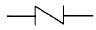
(정답률: 85%)
49. 보기와 같은 용접 기호의 설명으로 올바른 것은?
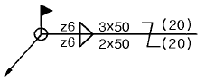
- ○ : 현장 용접
- z6 : 목 두께 6mm
- 2 × 50 : 루트간격과 용접부 길이
- (20) : 인접한 용접부 간의 거리(피치)
(정답률: 74%)
50. 보기와 같은 방열기를 나타낸 기호을 올바르게 설명한 것은?
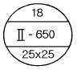
- 두 기둥이며, 지름은 18㎜
- 두 기둥형이며 높이는 650mm
- 지름은 18㎜이며 절수는 2개
- 절수는 2개이며 크기는 25 × 25
(정답률: 81%)
51. 90° 엘보 4개를 사용한 보기와 같은 입체도의 평면도로 가장 적합한 것은?
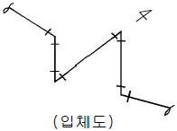
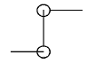
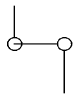
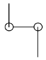
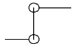
(정답률: 79%)
52. 다음 중 압력배관용 탄소강관을 표시하는 기호는?
- SPPH
- SPPW
- SPP
- SPPS
(정답률: 81%)
53. P&I 플로시트의 작성에 대한 설명 중 틀린 것은?
- 장치 조작의 전기능이 구체적으로 요약되어야 한다.
- 계기류에는 계기 기호, 계기 번호를 반드시 명시할 필요가 없다.
- 배관의 라인번호는 정확하게 기입한다.
- 프로세스용과 유틸리티용으로 대별된다.
(정답률: 90%)
54. 플랜트배관 성형 가공작업과 관련한 일반적인 판금 전개 방법이 아닌 것은?
- 방사선 전개법
- 삼각형 전개법
- 평행선 전개법
- 투영선 전개법
(정답률: 62%)
55. 샘플링 검사의 목적으로서 틀린 것은?
- 검사비용 절감
- 생산공정상의 문제점 해결
- 품질향상의 자극
- 나쁜 품질인 로트의 불합격
(정답률: 53%)
56. 월 100대의 제품을 생산하는데 세이퍼 1대의 제품 1대당 소요공수가 14.4 H 라 한다. 1일 8 H, 월 25일, 가동한다고 할 때 이 제품 전부를 만드는데 필요한 세이퍼의 필요대 수를 계산하면? (단,작업자 가동율 80 %, 세이퍼 가동율 90 % 이다.)
- 8대
- 9대
- 10대
- 11대
(정답률: 60%)
57. 다음의 PERT/CPM에서 주공정(Critical path)은? (단, 화살표 밑의 숫자는 활동시간을 나타낸다.)(오류 신고가 접수된 문제입니다. 반드시 정답과 해설을 확인하시기 바랍니다.)
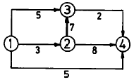
- ① - ③ - ② - ④
- ① - ② - ③ - ④
- ① - ② - ④
- ① - ④
(정답률: 52%)
58. 제품공정분석표에 사용되는 기호 중 공정간의 정체를 나타내는 기호는?
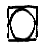
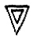
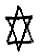
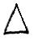
(정답률: 74%)
59. T Q C (Total Quality Control)란?
- 시스템적 사고방법을 사용하지 않는 품질관리 기법이다.
- 아프터 서비스를 통한 품질을 보증하는 방법이다.
- 전사적인 품질정보의 교환으로 품질향상을 기도하는 기법이다.
- QC부의 정보분석 결과를 생산부에 피드백하는 것이다.
(정답률: 82%)
60. 계수값 관리도는 어느 것인가?
- R관리도
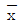
관리도- P관리도
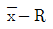
관리도
(정답률: 49%)